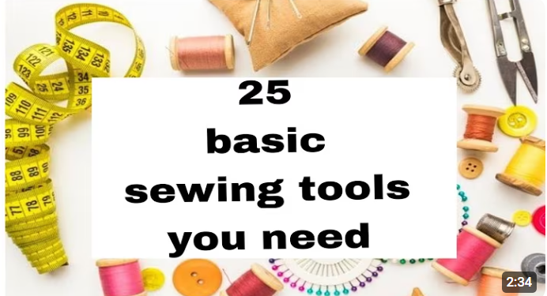
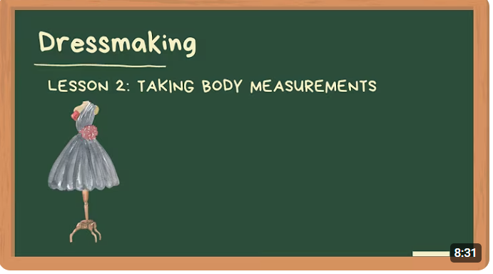
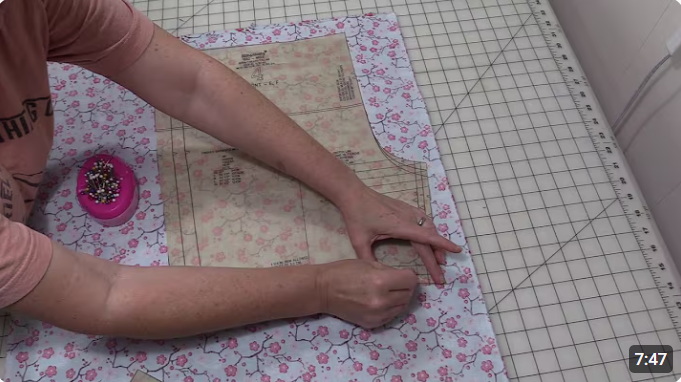

Basic Sewing Tools
Learn about essential tools for every sewing project.

0
0
Basic Body Measurements
Learn how to take accurate body measurements for perfect fitting.

0
0
Tracing Pattern
Learn about pattern placing and tracing.

0
0